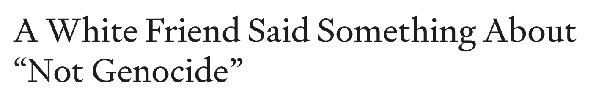
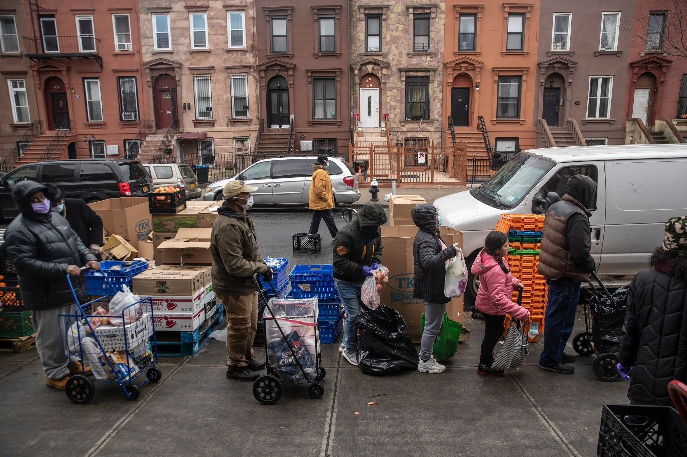
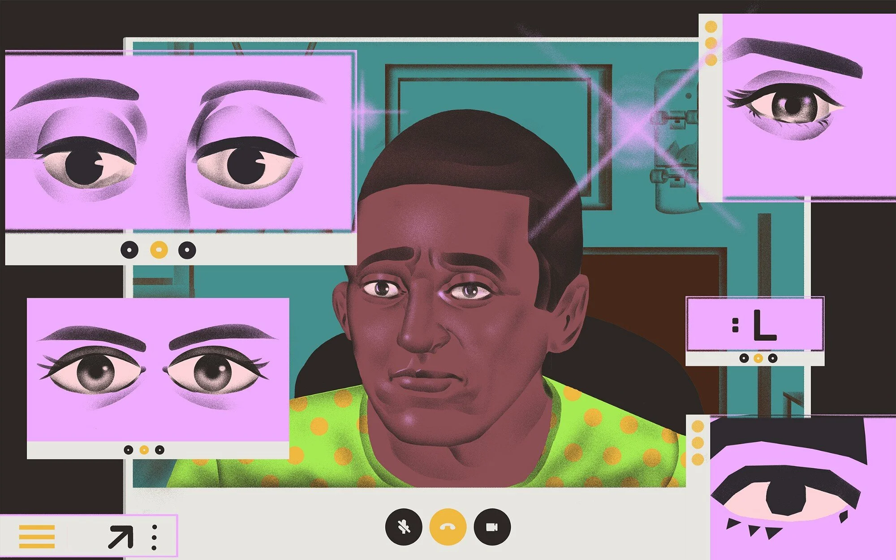
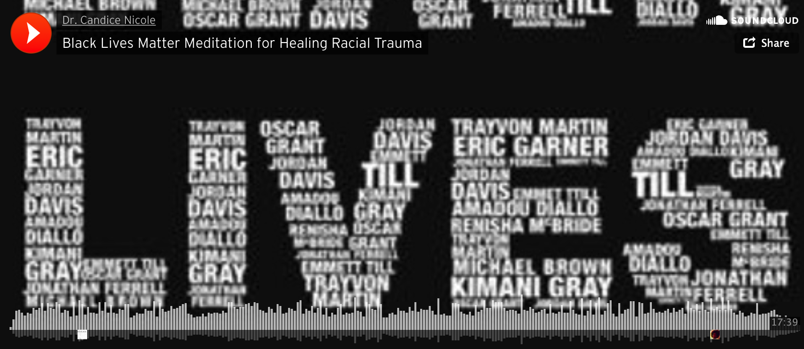
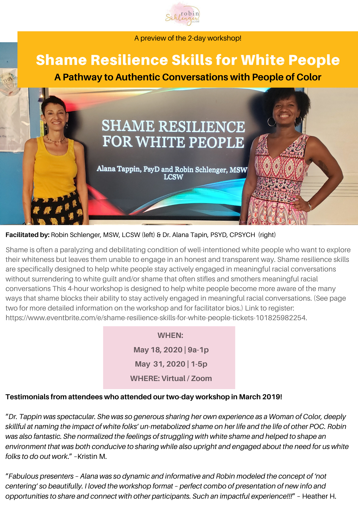
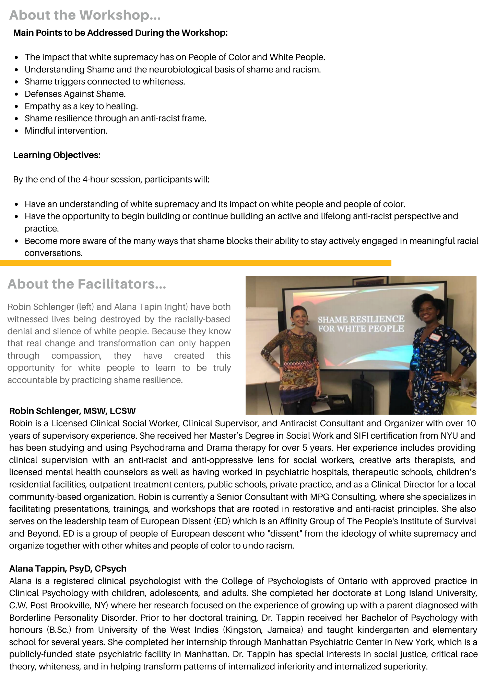

2020-04-28
The Privilege Of A Universal Experience
One of the manifestations of internalized racial superiority is the belief in and acting out of the idea that we all share a universal/common experience. One of the many problems with this is that “the experience” is centered on whiteness and white culture. If I hear one more person say, we are all going through this together, or we are all experiencing the same thing, I am going to scream. With that said, there was a time when I too believed in the idea of a common human experience. However, what has become blatantly clear to me recently (better late than never) is that although we may all be experiencing the Covid-19 pandemic, we are NOT all experiencing it in the same way! This belief perpetuates racism by keeping white supremacy culture front and center and making all other experiences an afterthought. No human being should ever be an afterthought.
See you on the journey,
Robin

A White Friend Said Something About “Not Genocide” by Christina Springer
This article was another reminder of the deeply rooted history that this country (more concisely, those of us who are white) have of treating BIPOC as subhuman and disposable. As the author says, “history repeats” and it is repeating quite openly during this pandemic. The question is, what are we going to do about it? I see this article as a call to action and change. As the author clearly states, “Every time you have not actively worked to dismantle white supremacy, you have participated in leading up to this moment”. I have to take a deep breath every time I read that line. I do so because the truth of it is deeply painful to embrace. Yet, I must embrace it if I am going to make changes; changes to myself and to the world I have inherited.
Link to Article: https://medium.com/@christinaspringer/a-white-friend-said-something-about-not-genocide-4d2b263f9db0

Social Distancing is a Privilege by Charles M. Blow
I have been thinking and talking with others who are able to stay at home and practice social distancing. I’m not surprised that white supremacy culture and racial disparities are present during this pandemic. I am angry and a little ashamed by my own privilege. As many of my white friends and family are having virtual happy hour (which I am guilty of), complaining about being bored, or feel frustrated with keeping their children busy, there are people who CANNOT stay home and even when they are home they can’t quarantine because they live in a one room apartment and share one bathroom with numerous people. They can’t escape to an “Airbnb” to quarantine themselves. One of the things that has really been getting to me is the way that people try to make each other feel better by saying things like "we are all going through the same thing". We are NOT! As Charles Blow says, “this virus behaves like others, screeching like a heat-seeking missile toward the most vulnerable in society. And this happens not because it prefers them, but because they are more exposed, more fragile and more ill.” There is a 41-minute video of the author speaking on the racial disparities of the Covid-19 virus embedded in the article.
Link to article: https://www.nytimes.com/2020/04/05/opinion/coronavirus-social-distancing.html?smid=li-share

Don’t Ask Me to Turn On My Camera For Work Calls by “The Only Black Guy in the Office”
This article summed up a lot of things that I have been hearing and discussing recently about how white supremacy culture is rearing its ugly head in virtual meetings and working from home. I was reminded the other day that us white folks are taking up a lot of space in Zoom meetings and playing out a lot of internalized racial superiority (no surprise there). The author of this article pointed out an embarrassing blind spot for me. I get a little judgy when someone doesn’t show their video during a virtual session. Here goes some of the judgy narrative: “If we all have to be seen, so do you”, and “What are you doing that we can’t see you?”, “What are you hiding?” “Who knows what you're doing if we can’t see you”. It doesn’t feel good to admit this, but it never even occurred to me that someone on one of these calls would not want to share/show their personal space. This may be a short article, but it sheds some much-needed light and it gave me an opportunity to have deeper conversations leading to deeper sensitivity. As Dr. Kenneth Hardy (one of my mentors) says, “It’s about moving from racial awareness to racial sensitivity.”
Link to article: https://level.medium.com/dont-ask-me-to-turn-on-my-camera-for-work-calls-dc3322dc32b9

Meditation:
The Ally + Accomplice Meditation for Cultivating an Anti-Racist Mindset by
Dr. Candice Nicole
This is a 17-minute guided meditation for white people who identify as allies and/or accomplices to Black Lives Matter using mindfulness, affirmation, and metta (loving-kindness). There are 2 meditations on this page. The second one is specifically for white allies.
Link to video: http://drcandicenicole.com/2016/07/black-lives-matter-meditation/
Embedded media (requires internet): //www.youtube.com/embed/dTFZ_3mMbLI?wmode=opaque&enablejsapi=1
Video:
Ken Hardy on "Making Talking About Race Our Work"
Speaking of Dr. Hardy, I recently watched this short video clip from a 2016 keynote speech he gave at a Psychotherapy Networker Symposium. It's no surprise how relevant it is today as we continue to see racial disparities play out during this pandemic. In this clip, he talks to a room full of mostly white therapists (believe me I know, I’ve been to several of these) about what he calls “the centrality of whiteness”. As always, his vulnerability, strength, courage, passion and pain move me to tears especially when he says, “we are all entangled in a massive web of mutuality”. He reminds us again that our fates are all mingled together.
Link to video: https://www.youtube.com/watch?v=dTFZ_3mMbLI

